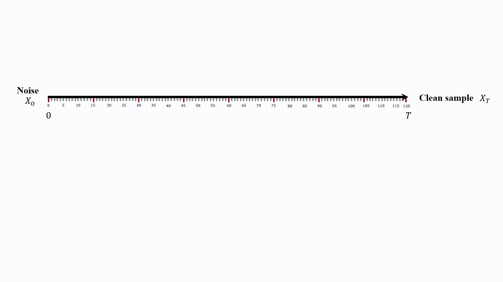
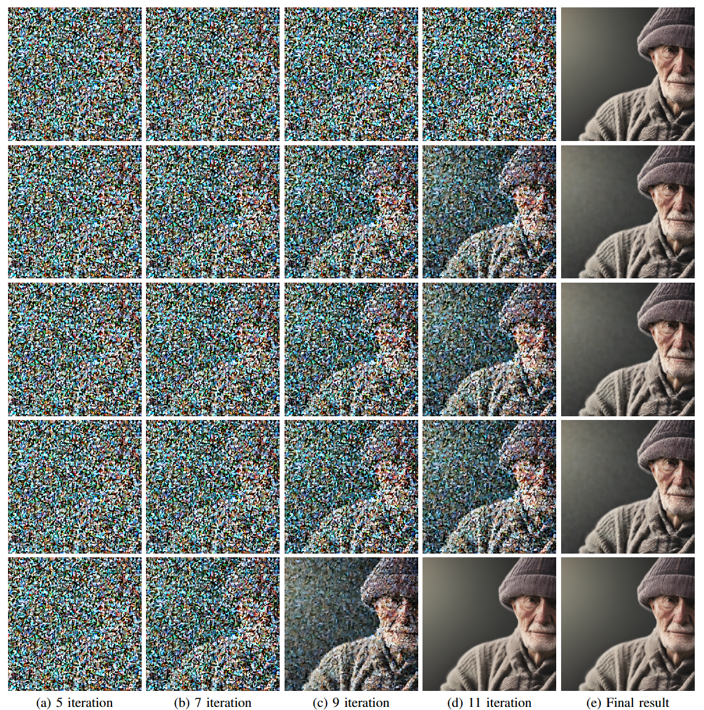
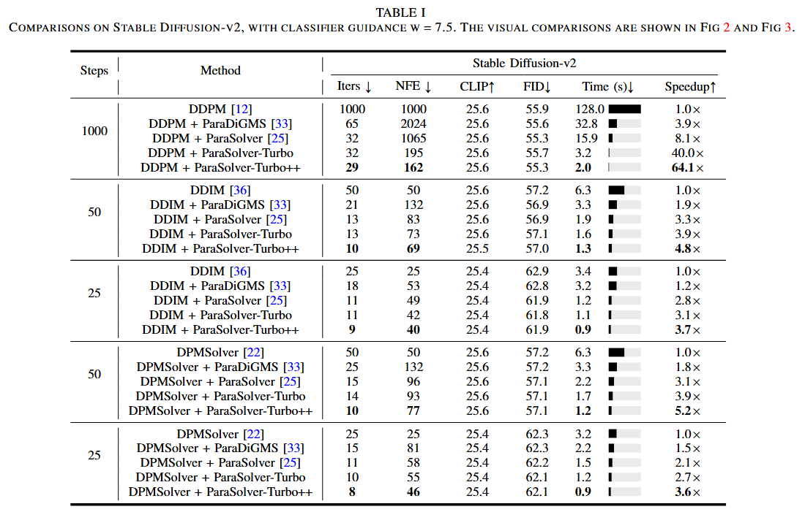
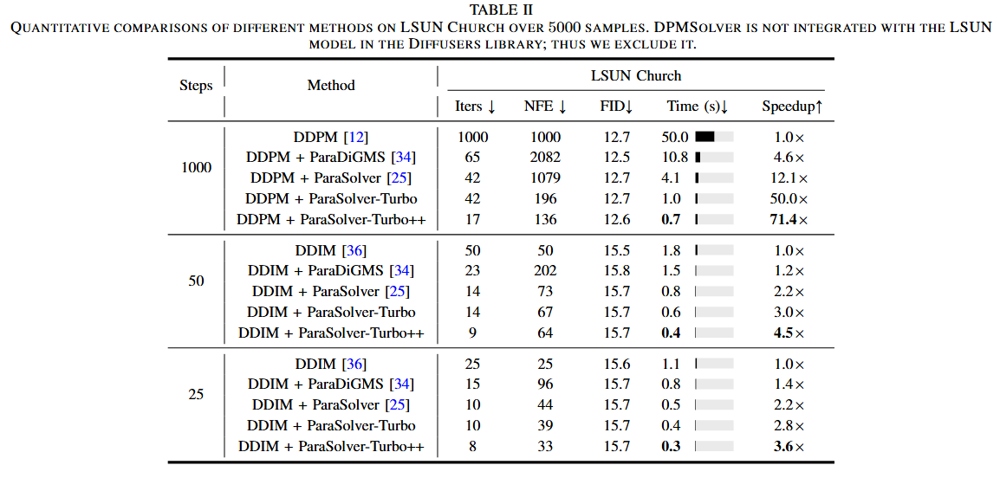

Accelerating Parallel Diffusion Integrator via Intrinsic Partially Linear Structure
Abstract
This paper explores the challenge of accelerating the inference process of Diffusion Probabilistic Models (DPMs). We tackle this critical issue from a dynamic system perspective, in which the inherent sequential nature is transformed into a parallel sampling process. Specifically, we first reveal that the sequential integral solver of the diffusion model can be approximated by a full linear solver with a negligible error, enabling efficient computation for parallel integral solvers of DPMs. Based on such a linear formulation, we then introduce a unified framework that reformulates the original nonlinear sequential integral process of a diffusion model as a system of partial linear equations. Moreover, we further develop an immediate update strategy and an adaptive stopping criterion to solve the system. In addition, we prove that (1) the system admits a unique root corresponding precisely to the trajectory of the sequential integral solver; (2) solving the system guarantees convergence to the trajectory of sequential integral solvers in equal or fewer iterations. Building on these insights, we present ParaSolver-Turbo++, a partial linear parallel integral solver to accelerate a broad class of sequential and parallel sampling methods such as DDPM and ParaSolver. Extensive experiments validate that ParaSolver-Turbo++ achieves up to 71.4x speedup in terms of wall-clock time without measurable quality degradation. The source code will be released publicly.
Acceleration Showcase (Up to 71.4x Speedup)
ParaSolver-Turbo++ achieves massive speedup without quality loss.
Our method (top) vs. Baseline (bottom).

The Problem with Diffusion Models
Diffusion Probabilistic Models (DPMs) are powerful but slow. Generating high-quality outputs requires numerous sequential denoising steps. Current parallel methods suffer from two major bottlenecks:
High NFE Overhead
Each parallel iteration requires substantially more neural function evaluations (NFEs) than sequential sampling, quickly saturating GPU compute limits.
High Iteration Counts
Despite reductions, the number of iterations remains high, capping the maximum achievable speedup.
Our Solution: ParaSolver-Turbo++
We propose ParaSolver-Turbo++, a unified framework that reinterprets sequential sampling as a mixed system of linear and nonlinear equations. By exploiting this intrinsic partially linear structure, we drastically reduce the NFE overhead.
Our framework is enhanced by two key strategies:
Immediate Update Strategy
A Gauss-Seidel-like approach that immediately incorporates newly updated components, ensuring faster convergence (theoretically guaranteed in equal or fewer iterations).
Adaptive Stopping Criterion
A dynamic tolerance mechanism that terminates iterations more precisely, further reducing unnecessary computation.
How It Works: The Partially Linear Pipeline
Instead of treating all steps as computationally expensive nonlinear operations, our method linearizes most of the sampling process. As shown in the pipeline below, only a small number of steps (the "Nonlinear Region" ρ) require full model evaluations. The remaining steps ("Linear Region") are solved with a highly efficient linear solver, dramatically reducing NFE and unleashing parallel efficiency.
Preserving Quality: Intermediate Step Comparison
Our method converges to a high-fidelity image in significantly fewer iterations, demonstrating efficiency without sacrificing quality.
Comparison 1: Expediting DDIM (50 steps)
The rows, from top to bottom, represent DDIM, ParaDiGMS,
ParaSolver, ParaSolver-Turbo, and ParaSolver-Turbo++.
Comparison 2: Visual comparison of samplers (50-step DDIM baseline)
Quantitative Results
Our method sets a new state-of-the-art in accelerating DPM sampling. The tables below (from our paper) show a comprehensive comparison on the Stable Diffusion-v2 and LSUN Church benchmarks. ParaSolver-Turbo++ consistently achieves the lowest wall-clock time and iteration counts, with negligible change in FID or CLIP scores, even on a single GPU.
 